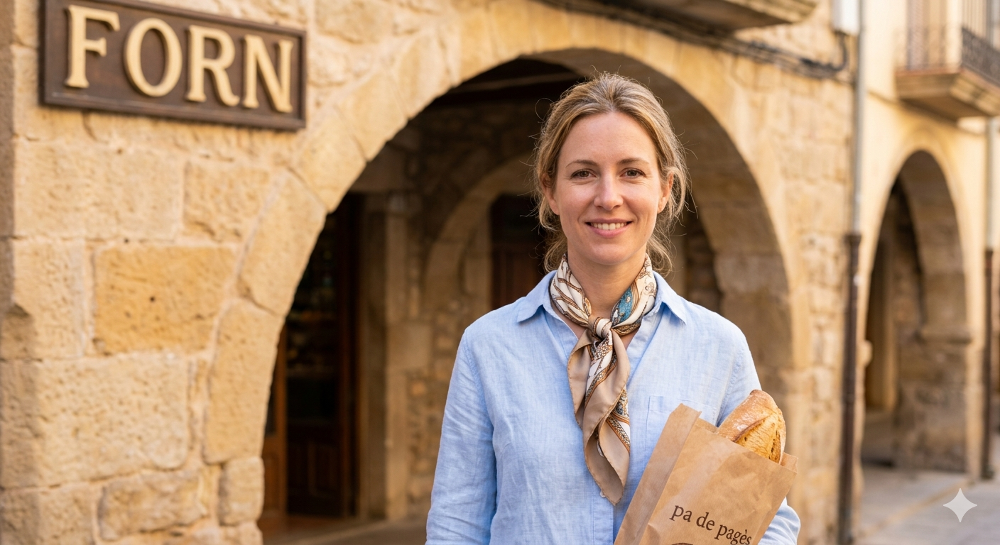
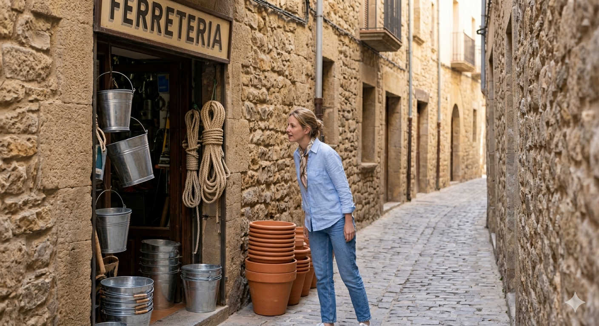
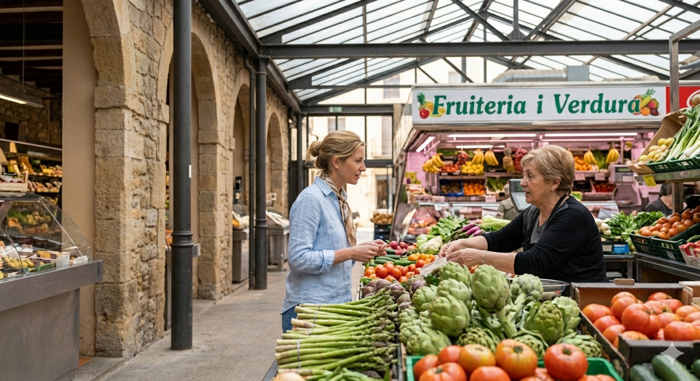
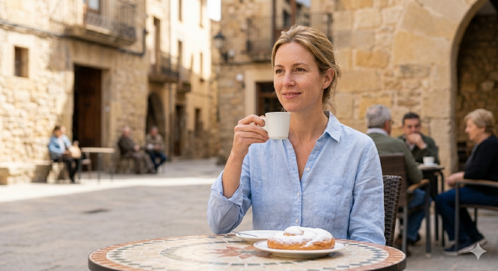
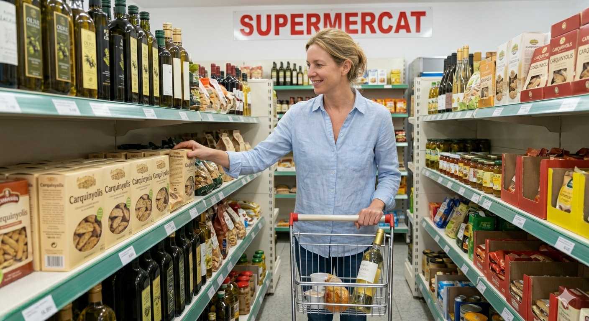
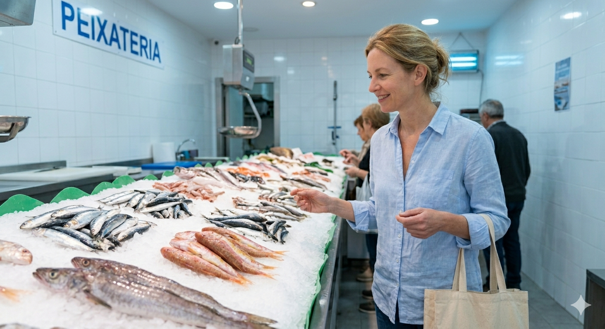

Exercici 1 · Escolta i completa tot el relat
El relat està dividit en sis fragments. Prem el botó de cada imatge, escolta i completa els buits.

Bon dia. Avui fa un matí de perfecte. La meva primera sempre és al . Mireu quina vista. Aquests arcs antics de són preciosos. L’olor de pa de calent que surt del forn és . Faig quatre paraules amb el i ja tenc el meu pa acabat de fer. Ara sí, el dia ja ha .

Després vaig cap a la , amagada en un estret. És una botiga petita, una mica , però plena de . Només necessitava un petit per a la porta de l’hort de la , però sempre m’entretenc mirant els antics de que tenen a fora. Entrar-hi és com tornar enrere en el .

Ara toca anar al mercat . Avui, el mercat cobert és ple de . Vaig directament a la meva parada de preferida. Mireu aquests ! Espàrrecs verds de primavera, vermelles i brillants... Tot és , encara amb la frescor de l’aire del . La venedora sempre em tria el .

Una petita pausa és . M’assec en un petit, amb taules que surten cap a la . Amb aquest sol suau de primavera, prenc un cafè amb i una ensaïmada , amb una mica de sucre en . Aquest és el moment de , aturar-me i veure com el poble es . És una felicitat senzilla i .

Després faig una entrada ràpida al del barri. És petit, només una botiga de tota la , però hi ha de . Agafo oli d’ , potser una botella de vi blanc i algunes coses . El botiguer coneix tothom pel i sempre hi ha temps per a una conversa .

La darrera aturada és la . El taulell fa : sardines i peix fresc de la Mediterrània damunt d’un de gel . Trio una cosa senzilla per . A aquesta hora sembla que tot el poble passi per aquí, comentant i saludant-se. Missió !
Exercici 2 · Comprensió
Ara respon preguntes sobre el sentit global del relat, el to i la intenció de la narradora.
Puntuació: 0/101. Quina idea general transmet el relat?
2. Per què el relat no és simplement una llista de compres?
3. Quina funció té el forn dins el relat?
4. Per què la ferreteria sembla especial per a la narradora?
5. Com es presenta la parada de verdures?
6. Què representa la pausa del cafè?
7. Com es diferencia aquest supermercat d’un gran supermercat anònim?
8. Què suggereix la frase “tot el poble passi per aquí”?
9. Quin és el to dominant del relat?
10. Què aprenem sobre la narradora?
Exercici 3 · A quina botiga ho compraries?
Fes clic en un producte i després fes clic en la botiga on normalment el compraries. Si la resposta és correcta, el producte queda marcat en verd.